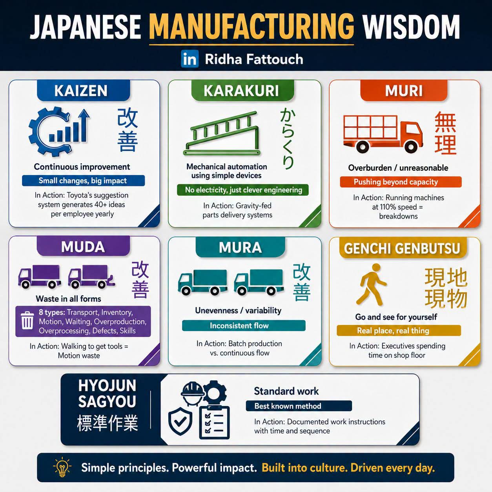

Hujan turun menderas membasahi jendela kaca patri di sebuah ruang kerja bersama yang temaram di sudut kota Bandung. Suara rintik air yang menghantam kaca seolah menjadi satu-satunya melodi yang mengisi kekosongan di antara tiga manusia yang duduk mematung mengelilingi meja kayu bundar. Di tengah meja itu, di bawah pendar lampu gantung berwarna kuning kusam, tergeletak sebuah cetakan infografis yang ujung-ujungnya mulai melengkung karena kelembapan udara. Sebuah diagram tentang Japanese Manufacturing Wisdom.
Tirta, pemuda berusia dua puluh enam tahun dengan sorot mata yang dulunya selalu memancarkan ambisi menyala, kini menatap kosong ke arah kertas tersebut. Di sebelahnya, Senja, seorang insinyur mekatronika jenius yang biasanya tak pernah bisa diam merakit sesuatu, kini menyembunyikan wajahnya di balik telapak tangannya yang kapalan. Dan di seberang mereka, Raka, sang arsitek sistem yang selalu berbicara dengan data dan probabilitas, hanya memutar-mutar cangkir kopinya yang sudah lama dingin.
Kalimat itu menggantung di udara, lebih dingin dari suhu ruangan yang pendinginnya lupa dimatikan. Perusahaan rintisan yang mereka bangun dari nol, dari mimpi di kamar kos yang sempit, kini tinggal menghitung hari menuju kematiannya. Mereka bertiga adalah lulusan terbaik di angkatannya. Tirta dengan visi bisnisnya yang tajam, Senja dengan keajaiban tangannya menciptakan mesin, dan Raka dengan algoritma efisiensinya yang tanpa celah. Mereka seharusnya tidak gagal. Mereka adalah tiga bintang muda yang digadang-gadang akan mengubah lanskap manufaktur lokal. Namun, kecerdasan ternyata bukan jaminan atas keselamatan.

Raka menghela napas panjang, jari telunjuknya yang kurus terulur menyentuh permukaan kertas infografis di tengah meja. Ia menunjuk ke arah kotak berwarna ungu di sudut kiri bawah.
Raka benar. Secara harfiah dan metaforis, perusahaan mereka dipenuhi oleh Muda. Raka mengingat kembali hari-hari di mana mereka menumpuk komponen robotik berbulan-bulan di gudang (Inventory waste), hanya karena Tirta berasumsi harga komponen akan naik. Ia mengingat betapa seringnya baris kode yang ia tulis harus dirombak total karena perubahan spesifikasi yang mendadak dari klien, sebuah Overprocessing yang menguras kewarasan. Namun, yang paling menyakitkan bagi Raka bukanlah pemborosan material atau waktu, melainkan pemborosan emosional. Berapa banyak waktu yang mereka buang untuk berdebat tentang hal remeh karena ego masing-masing? Berapa banyak ide brilian dari tim level bawah yang terabaikan karena mereka merasa terlalu pintar untuk mendengarkan?
Mereka telah mengabaikan prinsip dasar Kaizen. Continuous improvement. Small changes, big impact. Dalam poster itu tertulis bagaimana sistem saran Toyota menghasilkan lebih dari 40 ide per karyawan setiap tahunnya. Sedangkan di Nusantara Automata, ide adalah monopoli mereka bertiga. Mereka selalu menginginkan inovasi yang revolusioner, lompatan raksasa yang akan menghiasi halaman depan media teknologi. Mereka meremehkan perubahan-perubahan kecil yang inkremental. Mereka menolak memperbaiki proses perlahan-lahan, dan memilih untuk menghancurkan sistem lama untuk membangun yang baru setiap kali ada masalah kecil. Akibatnya, fondasi mereka rapuh. Tidak ada perbaikan berkelanjutan, yang ada hanyalah siklus kehancuran dan kelelahan yang berulang.
Senja perlahan mengangkat wajahnya. Lingkaran hitam di bawah matanya adalah saksi bisu dari ratusan jam tanpa tidur yang ia korbankan. Matanya tertuju pada kotak berwarna oranye kemerahan di sudut kanan atas poster. Sebuah gambar truk yang kelebihan muatan. Muri.
Kepingan kenangan memukul batin Senja. Ia ingat malam di mana ia meminum empat cangkir espresso berturut-turut hingga jantungnya berdebar menyakitkan, hanya untuk mengejar tenggat waktu prototype robot perakitan yang dijanjikan Tirta kepada klien dalam waktu yang tidak masuk akal. Tirta selalu berkata, "Kita startup, Senja. Kita harus hustle. Kita harus melampaui batas." Dan Senja, dengan loyalitas butanya, selalu mengiyakan. Ia menekan dirinya sendiri, ia menekan tim di bawahnya. Jam kerja normal menjadi mitos. Bekerja di akhir pekan menjadi kewajiban yang tak tertulis. Mereka bangga menyebut diri mereka pejuang, padahal mereka hanyalah budak dari ekspektasi mereka sendiri yang tak terbatas.
Senja menggeser pandangannya ke kotak berwarna hijau di sebelah Muri. Karakuri. Mechanical automation using simple devices. No electricity, just clever engineering. Sebuah tangga sederhana dengan prinsip gravitasi tergambar di sana.
Air mata akhirnya lolos dari sudut mata Senja. Betapa ironisnya. Sebagai insinyur, ia selalu membanggakan kerumitan desainnya. Ia menggunakan sensor LIDAR termutakhir, aktuator servo paling mahal, dan sistem komputasi berdaya tinggi untuk menyelesaikan masalah perakitan di pabrik klien. Padahal, jika ia mau berhenti sejenak dan berpikir jernih, banyak dari masalah tersebut bisa diselesaikan dengan tuas mekanik sederhana, pegas, dan gravitasi. Karakuri. Kecerdasan dalam kesederhanaan. Karena otaknya selalu berada dalam mode Muri (kepanikan dan kelelahan ekstrem), ia kehilangan kemampuan untuk berpikir jernih dan sederhana. Ia memecahkan masalah dengan uang dan teknologi rumit, menggelembungkan biaya produksi perusahaan hingga akhirnya mereka kehabisan napas sebelum mencapai garis akhir.
Raka menatap Senja dengan tatapan bersalah. Ia sebagai arsitek sistem seharusnya bisa melihat itu. Namun, ia juga terjebak dalam delusi yang sama. Mereka semua mabuk oleh narasi bahwa kehebatan selalu berwujud kompleksitas. Mereka lupa bahwa dalam dunia manufaktur, keindahan sejati terletak pada seberapa sederhana sebuah masalah dapat diselesaikan.
Tirta menundukkan kepalanya dalam-dalam. Beban kepemimpinan yang gagal kini menghimpit dadanya dengan kekuatan penuh. Ia memandangi kotak biru kehijauan bertuliskan Mura. Unevenness / variability. Inconsistent flow. Gambar truk yang berjejalan dan kosong secara bergantian.
Tirta menyadari bahwa dirinyalah sumber utama dari Mura di perusahaan ini. Visi Tirta selalu berubah-ubah seperti arah angin. Suatu minggu, ia akan datang ke kantor dengan energi meledak-ledak, mendeklarasikan bahwa fokus mereka sekarang adalah otomatisasi industri makanan. Tim dipaksa banting setir, meninggalkan proyek lama yang hampir selesai, dan memulai riset baru. Dua minggu kemudian, setelah bertemu investor yang berbeda, Tirta akan mengubah arah perusahaan menjadi robotika medis. Aliran kerja (workflow) mereka tidak pernah stabil. Terkadang mereka berlari cepat (batch production dadakan) hanya untuk menunggu berbulan-bulan tanpa kejelasan proyek selanjutnya. Ketidakkonsistenan ini merusak moral, merusak keuangan, dan merusak persahabatan mereka.
Tirta kemudian melirik tajam ke kotak berwarna emas di sisi kanan. Genchi Genbutsu. Go and see for yourself. Real place, real thing. Executives spending time on shop floor.
Sebuah pukulan telak menghantam ego Tirta. Kapan terakhir kali ia turun ke ruang workshop (bengkel) tempat Senja dan timnya bekerja dengan tangan berlumur oli? Kapan terakhir kali ia duduk di sebelah Raka, melihat langsung baris-baris kode yang berantakan karena server yang kewalahan? Tidak pernah. Selama dua tahun terakhir, Tirta mengunci dirinya di ruang kaca CEO-nya. Ia memantau perusahaan dari metrik, dari grafik pendapatan, dari laporan mingguan di layar monitornya. Ia memutuskan nasib produk dari ruang rapat ber-AC, tanpa pernah sekalipun menyentuh logam panas dari mesin bubut, tanpa pernah merasakan sendiri keputusasaan para teknisi ketika komponen gagal terhubung.
Ia mengkhianati Genchi Genbutsu. Ia berasumsi bahwa kecerdasannya cukup untuk memahami masalah dari kejauhan. Ia lupa bahwa data di layar komputer seringkali kehilangan konteks manusianya. Kebenaran tidak berada di dalam spreadsheet Excel; kebenaran berada di lantai produksi, di tempat masalah itu benar-benar terjadi. Jika saja ia turun ke bawah, ia mungkin akan melihat mata Senja yang cekung. Ia mungkin akan mendengar mesin yang berderit menahan beban Muri. Ia mungkin akan melihat sendiri penumpukan barang sisa akibat Muda. Namun, kesombongan intelektualnya telah membutakannya.
Hujan di luar perlahan mereda, menyisakan rintik-rintik halus yang tak lagi bising. Suasana di dalam kafe itu tetap hening, namun kini bukan lagi keheningan yang menyesakkan, melainkan keheningan dari sebuah penerimaan. Penerimaan atas kegagalan yang telanjang.
Raka menarik napas panjang, merapikan letak kacamatanya. Ia melihat ke bagian terbawah poster, sebuah kotak biru gelap yang menopang seluruh konsep lainnya. Hyojun Sagyou. Standard work. Best known method.
Tirta mengangguk perlahan. "Kita meremehkan keteraturan karena kita merasa rutinitas itu membosankan bagi orang-orang kreatif seperti kita. Ternyata, tanpa standar (Hyojun Sagyou), kreativitas kita menjadi liar dan menghancurkan diri kita sendiri."
Senja mengusap sisa air mata di pipinya. Ia menatap Raka dan Tirta bergantian. "Jadi... apa yang kita lakukan sekarang? Menggulung tikar? Menyerahkan sisa aset ke kurator?"
Tirta menatap kertas infografis itu sekali lagi. Filosofi Jepang kuno yang diadopsi oleh raksasa industri dunia, tergeletak tak berdaya di hadapan tiga anak muda modern yang terlalu sombong untuk belajar sejarah. Kalimat di bagian paling bawah berbunyi: Simple principles. Powerful impact. Built into culture. Driven every day.
Mereka gagal membangun budaya itu. Tapi, seperti layaknya esensi dari Kaizen, kegagalan hari ini adalah titik nol untuk perbaikan besok.
Raka tersenyum tipis, sebuah senyum melancholis namun tulus. "Dan setelah itu?"
Senja tertawa kecil, suara tawa yang terdengar sangat melegakan di tengah ruang yang suram itu. "Aku mungkin akan pergi ke Jepang. Bukan untuk belajar teknologi canggih. Aku ingin melihat museum Karakuri. Aku ingin belajar bagaimana membuat sesuatu bekerja hanya dengan kayu, benang, dan batu pemberat."
Raka mengangkat cangkir kopinya yang sudah dingin. "Kalau begitu, mari bersulang. Untuk kegagalan yang sangat mahal ini, dan untuk filosofi sederhana yang akhirnya berhasil masuk ke otak tebal kita."
Tirta dan Senja mengangkat cangkir mereka, mendentingkannya perlahan. Di luar jendela, langit Bandung mulai menunjukkan semburat cahaya abu-abu di ufuk barat. Badai telah berlalu, meninggalkan jalanan yang basah dan bersih. Tiga pemuda cerdas itu kehilangan perusahaan mereka, kehilangan mimpi besar mereka, kehilangan miliaran rupiah uang investor. Namun, di kafe temaram itu, untuk pertama kalinya dalam tiga tahun, mereka menemukan kembali kewarasan mereka. Mereka menemukan kembali persahabatan mereka. Dan yang paling penting, mereka belajar bahwa kecerdasan tertinggi manusia bukanlah kemampuan untuk membuat hal-hal yang rumit, melainkan keberanian untuk kembali pada hal-hal yang sederhana.
Kertas infografis itu tetap berada di atas meja, menjadi monumen bisu dari sebuah pelajaran yang dibayar dengan harga yang sangat mahal. Sebuah anatomi keruntuhan yang pada akhirnya, melahirkan kedamaian batin yang telah lama hilang.